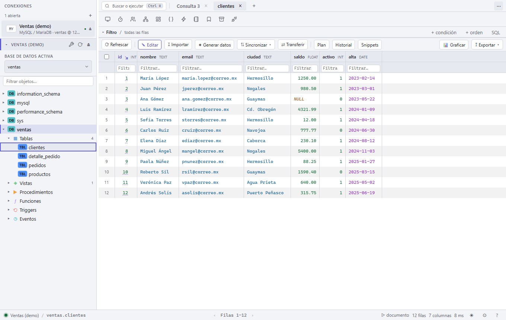
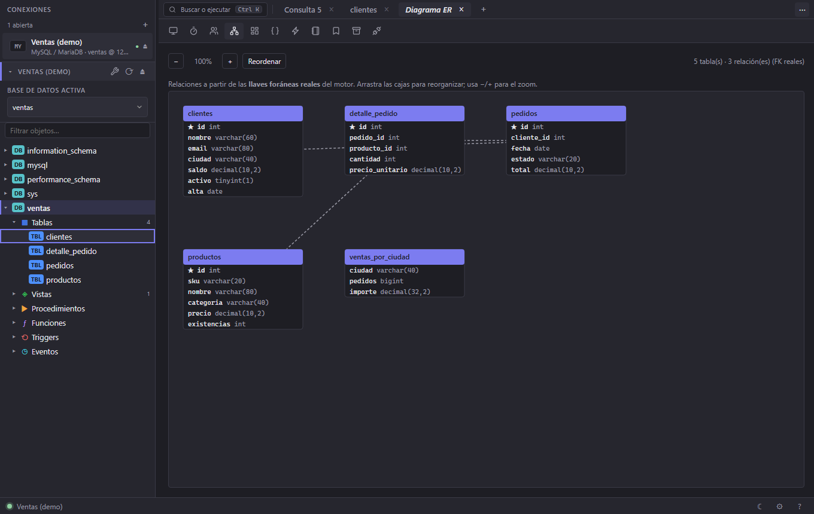
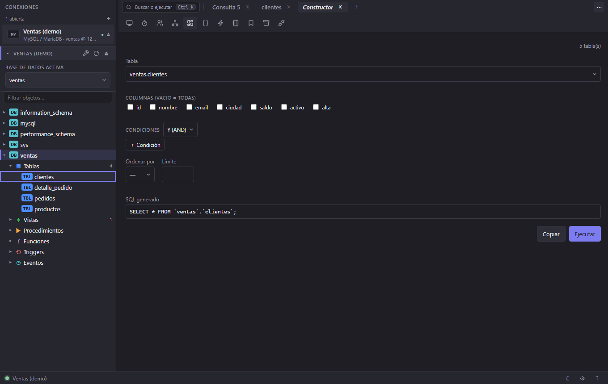
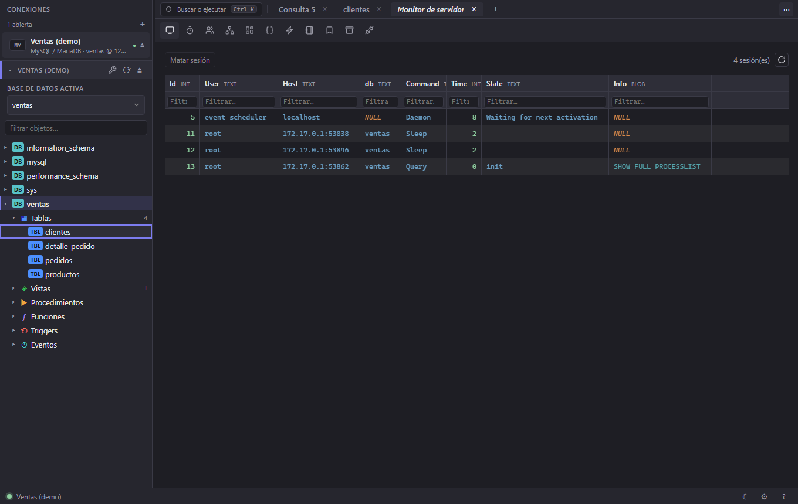
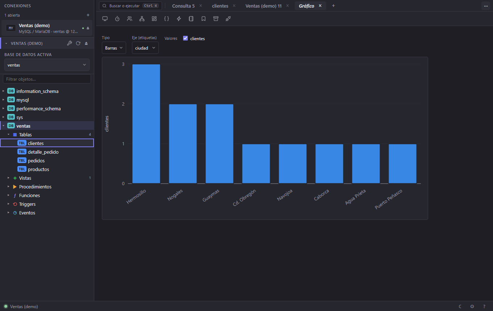

Squaero
SquaeroGestor de bases de datos
Tu gestor de bases de datos: ligero, local y libre.
Nativo, sin el peso de Electron ni una JVM. Todo se queda en tu equipo —sin nube, sin cuentas, sin telemetría— con edición transaccional segura para SQLite, MySQL/MariaDB, PostgreSQL, Informix y MongoDB.
Gratis y de código abierto · Windows y Linux (macOS próximamente)

Ligero y nativo
Núcleo en C y WebView del sistema: arranca al instante, sin el peso de un entorno Electron o una JVM.
Multi-motor
SQLite, MySQL/MariaDB, PostgreSQL, Informix, MongoDB y SQL Server desde una misma interfaz.
Local y privado
Tus conexiones y consultas se quedan en tu equipo. Sin cuentas, sin nube, sin telemetría.
Edición segura
Cambios sobre los datos en una transacción con vista previa del SQL: confirmas o descartas.
Código abierto
Gratuito y auditable. Sin licencias por asiento ni funciones tras un muro de pago.
Todo lo que esperas de un gestor de bases
Cada característica descrita aquí es algo que Squaero hace hoy — explorador de objetos, editor SQL y rejilla de resultados, en un solo lugar.

Editor SQL
Autocompletado por esquema, formateo, historial de consultas y snippets reutilizables.
Rejilla editable
Edita, inserta y borra filas en una transacción con vista previa; detalle de fila para registros anchos.
Explorador por tipo
Árbol de conexión → base → tablas, vistas, funciones, procedimientos, triggers y eventos, con iconos a color.
Import / Export
CSV, JSON, XLSX, XML, HTML y SQL. Importa hojas de cálculo y exporta cualquier resultado.
Herramientas
Diagrama ER, constructor visual de consultas, gráficos, monitor de servidor, usuarios y permisos.
Multi-motor
SQLite, MySQL/MariaDB, PostgreSQL, Informix, MongoDB y SQL Server — mismo flujo de trabajo en todos.




Comparativa honesta
Frente a herramientas conocidas. Solo afirmaciones verificables; señalamos también dónde la competencia es más fuerte.
| Squaero | Tabularis | Navicat | DBeaver CE | HeidiSQL | TablePlus | phpMyAdmin | Server Studio* | |
|---|---|---|---|---|---|---|---|---|
| Precio | Gratis | Gratis | De pago | Gratis | Gratis | Freemium | Gratis | Freemium |
| Código abierto | Sí | Sí | No | Sí | Sí | No | Sí | No |
| Plataforma | Win/Linux* | Win/mac/Linux | Win/mac/Linux | Win/mac/Linux | Windows | Win/mac/Linux | Web | Win/mac/Linux |
| Ligero (sin Electron/JVM) | Sí | Sí | Sí | No (JVM) | Sí | Sí | Web | No (JVM) |
| Local, sin telemetría | Sí | ~ | ~ | ~ | Sí | ~ | Sí | ~ |
| Soporta Informix | Sí | Sí | No | Sí | No | No | No | Sí |
| Editor SQL con autocompletado | Sí | Sí | Sí | Sí | Sí | Sí | Sí | Sí |
| Edición transaccional (vista previa) | Sí | ~ | ~ | ~ | ~ | ~ | ~ | ~ |
| Diagrama ER | Sí | Sí | Sí | Sí | ~ | Sí | ~ | ~ |
| Constructor visual de consultas | Sí | Sí | Sí | Sí | No | ~ | No | ~ |
| Gráficos | Sí | Sí | Sí | ~ | No | No | ~ | ~ |
| Monitor de servidor | Sí | ~ | Sí | ~ | ~ | No | ~ | Sí |
| Usuarios y permisos | Sí | ~ | Sí | ~ | ~ | No | Sí | Sí |
| Import/Export (CSV/JSON/XLSX/XML/HTML/SQL) | Sí | ~ | Sí | Sí | ~ | Sí | ~ | ~ |
| Generación de datos | Sí | ~ | Sí | ~ | No | No | No | ~ |
| Notebooks SQL | Sí | Sí | No | ~ | No | No | No | No |
| Asistente IA | No | Sí | ~ | ~ | No | No | No | No |
Windows y Linux; macOS en camino. Tabularis = cliente Apache-2.0 (Tauri/Rust); Informix y otros motores vía plugins. Server Studio = edición gratuita JE (Java Edition) de la suite para Informix. «~» = parcial o según edición/plugin.
Fuentes (revisado 11 jul 2026): las celdas de Squaero se verifican contra el código y las pruebas automatizadas de este repositorio; las demás, contra la documentación y la web oficial de cada producto — Tabularis, Navicat, DBeaver, HeidiSQL, TablePlus, phpMyAdmin, Server Studio. Las funciones evolucionan; si ves una celda inexacta, abre un issue.
Descargar
Para Windows y Linux, con los seis motores (SQLite, MySQL/MariaDB, PostgreSQL, Informix, MongoDB, SQL Server). Para Informix hace falta instalar aparte el IBM Informix Client SDK: de 32 bits en Windows, de 64 bits en Linux.
Windows
macOS
Linux
sudo snap install squaero --edge
El snap no incluye Informix.